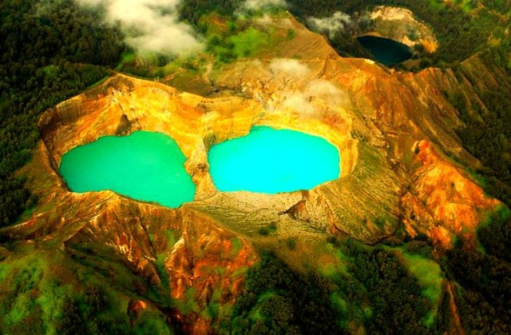
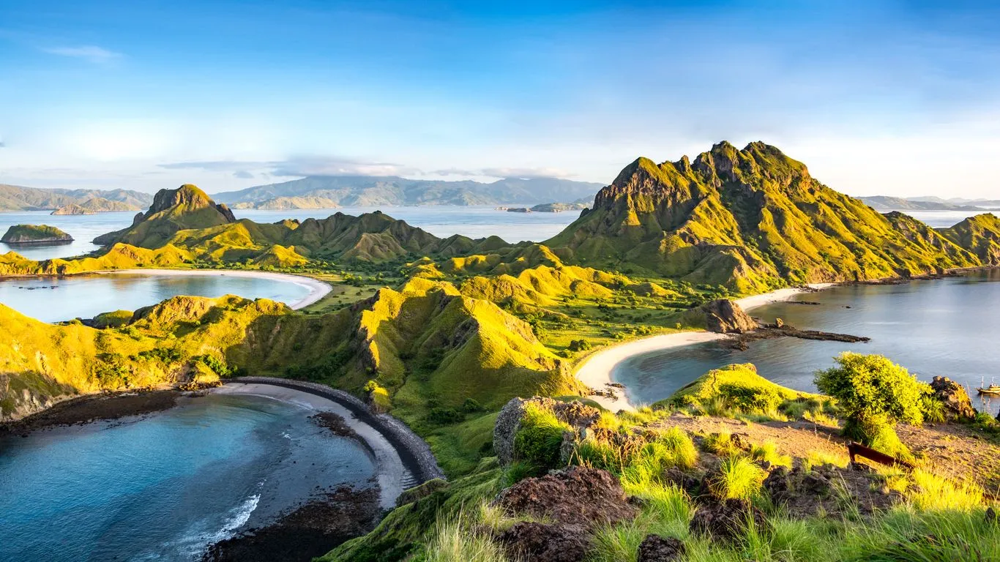
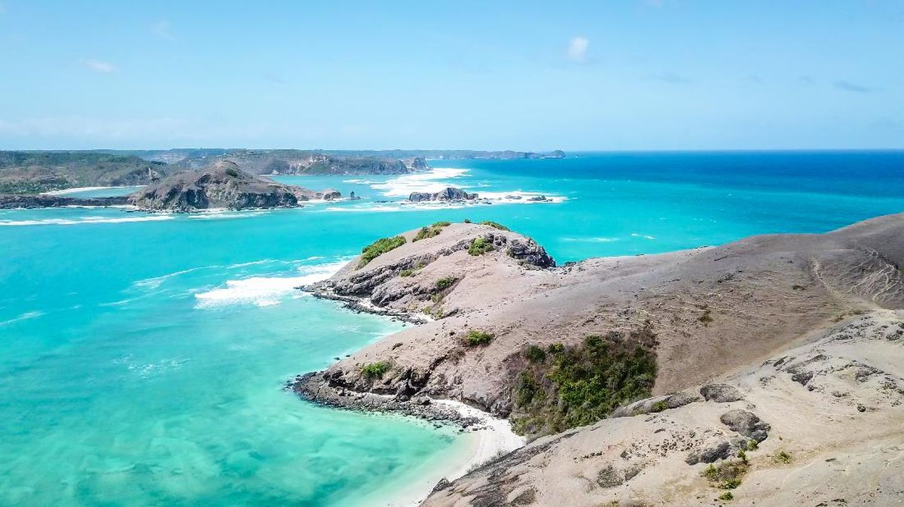
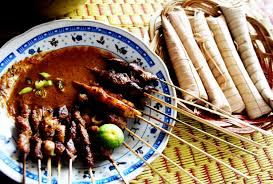
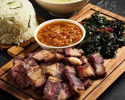

Tentang Kepulauan Nusa Tenggara
Kepulauan Nusa Tenggara, yang terbagi menjadi Nusa Tenggara Barat (NTB) dan Nusa Tenggara Timur (NTT), menawarkan pemandangan yang sangat berbeda dari pulau-pulau di barat Indonesia. Wilayah ini didominasi oleh topografi kering, bukit-bukit savana, dan gunung berapi yang spektakuler. Nusa Tenggara adalah rumah bagi keanekaragaman budaya, terutama suku-suku tradisional seperti Sasak (Lombok), Flores, Sumba, dan Timor. Kekayaan maritim dan daratnya, khususnya di kawasan Taman Nasional Komodo, menjadikannya destinasi yang wajib dikunjungi.
✨ Mengapa Memilih Nusa Tenggara?
Nusa Tenggara menawarkan pengalaman petualangan yang memukau. Di **Taman Nasional Komodo**, Anda dapat melihat langsung kadal raksasa Komodo, satwa endemik dunia. Di Lombok, Anda dapat mendaki Gunung Rinjani yang megah, dan di Flores, Anda akan disajikan dengan keindahan Danau Tiga Warna **Kelimutu**. Selain itu, pulau-pulau seperti Sumba menawarkan padang savana yang luas dan kebudayaan megalitik yang masih terjaga. Kombinasi pantai, bukit, dan budaya unik ini membuat Nusa Tenggara menjadi tujuan bagi wisatawan yang mencari keindahan alam yang dramatis dan pengalaman budaya yang mendalam.
🗺️ Destinasi Unggulan
Taman Nasional Komodo (NTT)

Situs Warisan Dunia UNESCO, tempat satu-satunya di dunia untuk melihat **Komodo** di habitat aslinya. Termasuk Pulau Komodo, Rinca, dan Padar.
Gunung Rinjani, NTB (Lombok)

Gunung berapi tertinggi kedua di Indonesia. Puncak Rinjani menawarkan pemandangan Danau Segara Anak yang ikonik. Populer untuk pendakian ekstrim dan panorama alam.
Danau Kelimutu, (NTT,Flores)
Danau kawah vulkanik yang terkenal karena memiliki tiga warna berbeda yang dapat berubah-ubah. Merupakan salah satu keajaiban alam di Pulau Flores.
Pulau Padar (NTT)
Pulau dengan pemandangan ikonik yang memperlihatkan teluk-teluk dan pantai dengan pasir tiga warna berbeda. Wajib dikunjungi saat wisata ke Labuan Bajo.
Pantai Pink/Pink Beach (NTT)

Salah satu dari tujuh pantai berpasir pink di dunia. Warna pink berasal dari fragmen terumbu karang merah. Lokasi favorit untuk *snorkeling* dan relaksasi.
Pantai Mandalika (NTB,Lombok)
Kawasan wisata terpadu yang terkenal dengan keindahan pantai dan sirkuit internasionalnya. Mandalika menawarkan pantai berpasir putih dan fasilitas wisata modern.
Makanan Khas Pulau Nusa Tenggara
-
1. Ayam Taliwang (Lombok)

Ayam muda yang dibakar atau digoreng setelah dibumbui dengan bumbu khas Lombok yang pedas, terbuat dari cabai merah kering, bawang putih, dan terasi.
-
2. Sate Bulayak (Lombok)
Sate daging sapi/ayam yang disajikan dengan kuah santan kental berbumbu kacang dan disajikan bersama **Bulayak** (ketupat khas yang dililit daun enau).
-
3. Sei Sapi (Nusa Tenggara Timur)
Daging sapi asap khas Rote/Kupang yang dimasak dengan cara diasapi menggunakan kayu bakar. Disajikan dengan tumisan bunga pepaya atau sambal lu'at.
-
4. Jagung Bose (Nusa Tenggara Timur)

Makanan pokok tradisional di NTT yang terbuat dari biji jagung tua yang direbus dengan santan dan kacang-kacangan. Teksturnya lembut dan rasanya gurih.
📸 Galeri Foto Nusa Tenggara